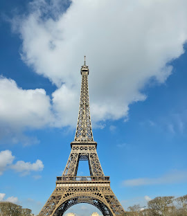
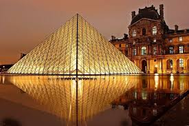

Paryż (fr. Paris, wymowaⓘ) – stolica i najludniejsze miasto Francji, a także departament (nr 75), w regionie Île-de-France. Położone jest w północnej części kraju, w centrum Basenu Paryskiego, nad Sekwaną. Stanowi centrum polityczne, ekonomiczne i kulturalne kraju.

Wieża Eiffla (fr. tour Eiffelⓘ, wym. [tuʀ ɛˈfɛl]) – obiekt architektoniczny Paryża, uznawany za symbol tego miasta i niekiedy całej Francji. Jest najwyższą budowlą w Paryżu, a w momencie powstania była najwyższą budowlą na świecie.

Luwr (fr. Louvre, Musée du Louvre [myze dy luvʁ]) – dawny pałac królewski w Paryżu, obecnie muzeum sztuki. Jedno z największych muzeów na świecie, jest też najczęściej odwiedzaną placówką tego typu na świecie. Stanowi jeden z ważniejszych punktów orientacyjnych stolicy Francji. Luwr położony jest między rue de Rivoli i prawym brzegiem Sekwany oraz ogrodami Tuileries i Rue du Louvre w obrębie 1. dzielnicy. W kompleksie budynków o całkowitej powierzchni wynoszącej 60 600 m² mieszczą się zbiory liczące około 350 000 dzieł sztuki od czasów najdawniejszych po połowę wieku XIX, dzieła światowego dziedzictwa o największej sławie, takie jak np. stela z kodeksem Hammurabiego, Nike z Samotraki, Wenus z Milo, Mona Lisa Leonarda da Vinci.